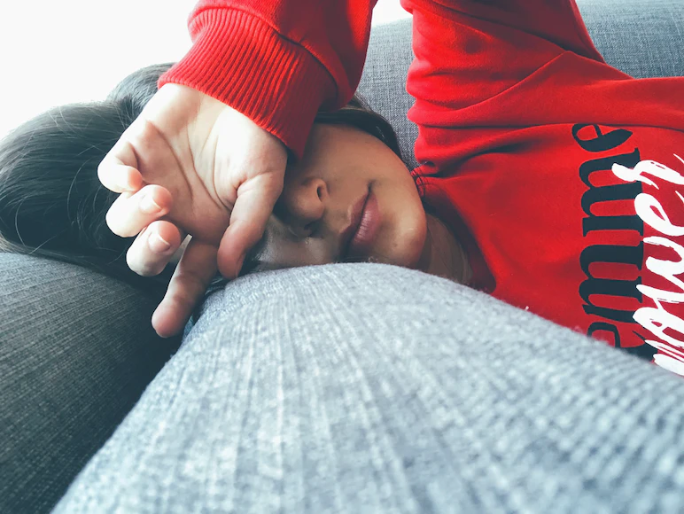

Sanjay Singh describes the Physical Self as the
tangible and observable part of a person. This
refers to our body and how we look. It is influenced by both
biological factors and the environment. This aspect of ourselves can
be further improved and developed.
Factors
People can be influenced through experience
Introspection
The process of looking inward and examining one's own thoughts,
feelings, and experiences. It can be a helpful way to gain
self-awareness and understanding of oneself.
Self-perception theory
According to the self-perception theory, people develop their
self-concepts by observing their own behavior. This means that
individuals may form beliefs about themselves based on their
actions, even if those beliefs are not completely accurate.
Self-concept
A person's overall view of themselves. It includes their
thoughts, feelings, and beliefs about themselves. Self-concept
is shaped by a variety of factors, including personality,
experiences, and culture.
Personal identity
A person's sense of who they are. It includes their beliefs
about their values, goals, and relationships. Personal identity
is also shaped by a variety of factors, including culture,
experiences, and personality.
Attachment
The emotional bond that develops between an infant and their
caregiver. It is a fundamental human need that is essential for
healthy development.
Social appraisal
The process by which people evaluate themselves based on the
feedback they receive from others. This feedback can be positive
or negative, and it can have a significant impact on
self-concept.
Interpersonal relationships
The relationships that people have with others, such as friends,
family, and romantic partners. These relationships play a vital
role in shaping self-concept.
Looking-glass self
A theory that explains how people develop their self-concept.
The theory states that people's self-concept is shaped by the
way they believe others perceive them.
Challenges
Problems that college students experience

Irregular sleep patterns
Due to the demands of their classes, social responsibilities,
and other responsibilities, college students sometimes struggle
to maintain regular sleep cycles. Irregular sleep habits can
result in physical discomfort, exhaustion, and impaired focus.
Unhealthy eating habits
Busy schedules can contribute to poor dietary choices among
college students. Relying on fast food, irregular mealtimes, and
excessive consumption of processed foods can negatively impact
their physical health.
Sedentary lifestyle
Long study sessions or hours spent in lectures can result in a
sedentary lifestyle. Lack of exercise can lead to weight gain,
weakened muscles, poor cardiovascular health, and a general
decline in physical fitness.
Mental health impacts
Significant stressors are an ordinary part of college life,
including social difficulties, financial hardships, and academic
pressures. Physical signs of high stress levels include tension
headaches, tense muscles, and weakened immune systems.
Body image concerns
Students in college may struggle with body image problems and be
unhappy with how they look. Negative body image can result from
social comparison, societal expectations, and media influences.
Low self-esteem and other psychological issues might follow.
Limited access to healthcare
Students may encounter difficulties getting healthcare, such as
insufficient health insurance coverage, a lack of
transportation, or a lack of acquaintance with the options that
are accessible. This may make it more difficult for them to
respond quickly to physical health issues.
Understanding
A new perspective
Your physical self plays a crucial role in how you understand
yourself. It encompasses your body, appearance, emotions, and
abilities. One way it shapes your understanding is through body image,
which affects how you see and feel about your body, and impacts your
confidence and self-esteem. Body image is influenced by societal
beauty standards, cultural values, and personal experiences. Your
physical abilities, like strength and coordination, also shape how you
perceive yourself and your identity. Engaging in physical activities
and improving performance can boost self-confidence and create a
positive self-image.
Moreover, your physical self is connected to sensory experiences like
touch, sight, taste, smell, and sound. These experiences shape how you
perceive the world and your place in it. They also influence your
emotions and interactions with the environment. Taking care of your
physical health is important since physical ailments or chronic
conditions can impact your self-perception and how you engage with the
world. Maintaining good physical health contributes to a positive
self-perception and overall well-being.
Furthermore, your appearance affects your social interactions and how
others perceive you. Society often places a strong emphasis on
physical attractiveness, and this can lead to self-consciousness and
influence your self-image and self-esteem. Your physical appearance
also influences first impressions, opportunities, and social
interactions, highlighting the social aspect of your physical self.
Tips
A way to handle yourself
1
Prioritize regular exercise
Physical activity offers several advantages, such as enhancing
mood, boosting energy, and enhancing attention. Aim for at least
150 minutes per week of moderate-intensity exercise, such as
jogging, yoga, or team sports, and find an activity you enjoy.
2
Maintain a balanced diet
For optimum physical health, you must provide your body with
nourishing nutrients. Variety is key when it comes to fruits,
vegetables, whole grains, lean meats, and healthy fats. Limit your
intake of processed foods, sugary snacks, and alcoholic or
caffeinated beverages.
3
Get enough sleep
The development of memories, cognitive function, and general
health all depend on getting enough sleep. To guarantee that you
wake up feeling rested and prepared to take on the day's tasks,
aim for 7-9 hours of sleep each night.
4
Practice stress management
Finding good coping mechanisms for stress is crucial because
college life may be difficult. Take part in relaxing and
stress-relieving activities, such as deep breathing exercises,
meditation, or enjoyable hobbies. Additionally, make an effort to
keep a balanced schedule and give self-care activities top
priority.
5
Stay hydrated
It's crucial to have enough water throughout the day to keep your
body functioning properly. Make it a habit to drink water on a
regular basis by carrying a reusable water bottle with you.
Refrain from consuming large amounts of sugary or caffeinated
beverages.
6
Take break from screens
Long periods of time in front of screens might harm your posture
and strain your eyes. Take regular breaks from your gadgets by
looking away, stretching, and participating in non-screen-related
activities.
7
Practice good hygiene
Self-confidence is boosted as well as physical health by
practicing proper personal hygiene. To stop the spread of germs,
remember to take frequent showers, clean your teeth twice a day,
and wash your hands often.
8
Seek support when needed
Do not be afraid to contact healthcare providers on campus or in
your neighborhood if you have any physical health issues. They can
offer advice, encouragement, and tools to assist your continued
physical well-being.